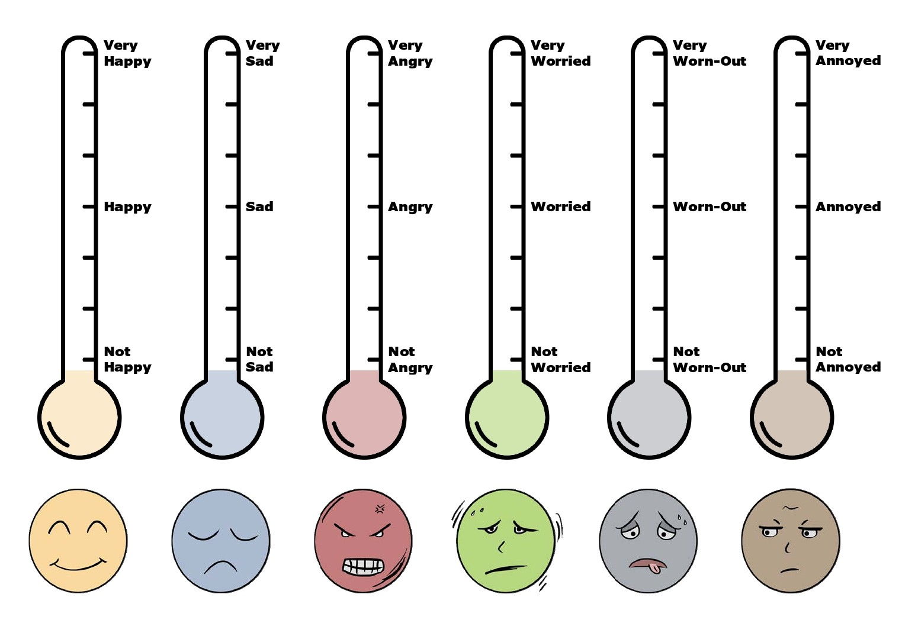

אודות מורן דיין - מטפלת רגשית לילדים
שלום, אני מורן דיין, מטפלת רגשית מוסמכת עם התמחות ב-CBT (טיפול קוגניטיבי-התנהגותי) ו-NLP (תכנות נוירו-לשוני).
במשך למעלה מעשור, אני עובדת עם ילדים בגילאי גן חובה עד כיתה ג',
מסייעת להם להתמודד עם אתגרים רגשיים ולפתח כישורים חברתיים חיוניים.
הגישה שלי משלבת את היתרונות של CBT ו-NLP,
מה שמאפשר לי להתאים את הטיפול לצרכים הייחודיים של כל ילד.
אני מאמינה שכל ילד הוא עולם ומלואו,
ושבאמצעות הכלים הנכונים, כל ילד יכול לפתח חוסן נפשי ולשגשג.
בנוסף לטיפולים פרטניים, אני מעבירה קורסים וסדנאות להורים ומחנכים, מתוך אמונה שסביבה תומכת היא מפתח להצלחת הטיפול.
הרגשות שלי

לפעמים קשה למצוא את המילים הנכונות כדי לתאר איך אנחנו מרגישים. זה בסדר גמור!
הרבה פעמים, ילדים (וגם מבוגרים) מתקשים לומר במילים מה הם מרגישים, אבל יכולים להצביע על תמונה שמתארת את הרגשות שלהם.
התמונה למעלה מראה מדחומי רגשות שונים. כל מדחום מייצג רגש אחר ועוצמות שונות שלו.
אתם מוזמנים להסתכל על התמונה ולחשוב - איזה מדחום הכי מתאים למה שאתם מרגישים עכשיו? ובאיזו עוצמה?
זכרו, אין רגשות "נכונים" או "לא נכונים". כל הרגשות שלנו הם חשובים ויש להם תפקיד.
הצעד הראשון להבנת הרגשות שלנו הוא לזהות אותם, וזו דרך נהדרת להתחיל!